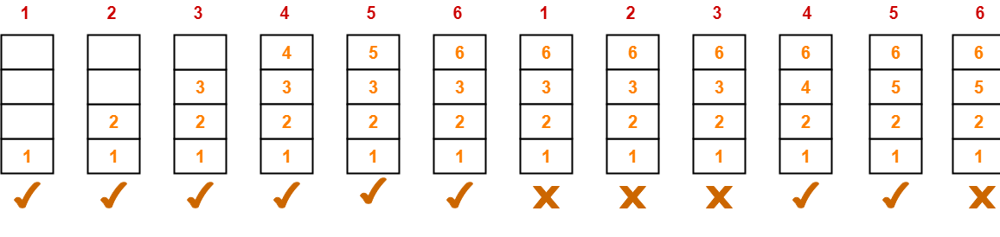

Dark
>>>
Home
FIFO
Explaination
Simulation
Graph
OPR
Explaination
Simulation
Graph
LRU
Explaination
Simulation
Graph
LIFO
Explaination
Simulation
Graph
Random
Explaination
Simulation
Graph
MRU
Explaination
Simulation
Graph
Compersion
Most Recent Use(MRU):-
MRU works on the principle of
“Most Recunt used “.
when newest page arrived in the main memory and if it not avilable then it replaces Recunt used.
MRU page replacement algorithm will behave as Optimal page replacement algorithm.
Examle 1:
onsider page reference string
1, 2, 3, 4, 5, 6, 1 , 2, 3, 4, 5, 6
with 4 page frames.Find number of page faults.
solution:

Initially all slots are empty, so when
1,2,3,4
came they are allocated to the empty
slots —>
4 Page Faults.
when 5 comes, it is not available in memory so it replaces the newest page slot i.e 4 ==> 5 —>
1 Page Faults.
Then 6 comes, it is not available in memory so it replaces the newest page slot i.e 5 ==> 6 .
1 Page Fault.
1 comes, it is available in memory so not increase page fault .
0 Page Fault.
2 comes, it is available in memory so not increase page fault .
0 Page Fault.
3 comes, it is available in memory so not increase page fault .
0 Page Fault.
Then 4 comes, it is not available in memory so it replaces the newest page slot i.e 3 ==> 4 .
1 Page Fault.
Then 5 comes, it is not available in memory so it replaces the newest page slot i.e 4 ==> 5 .
1 Page Fault.
6 comes, it is available in memory so not increase page fault .
0 Page Fault.
Total page fault :-
8
Total page fault Ratio :-
0.66
Total page Hit :-
4
Total page Hit Ratio :-
0.33
Reference For Better Understand
youtube Video(Techogram)
Gate Vidyalay(MRU)
Graph
Simulation